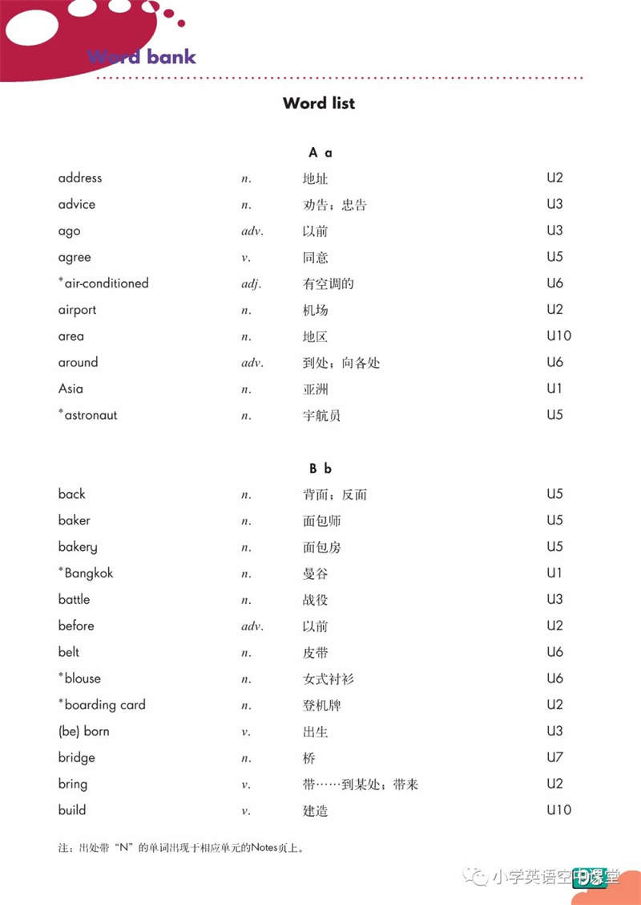
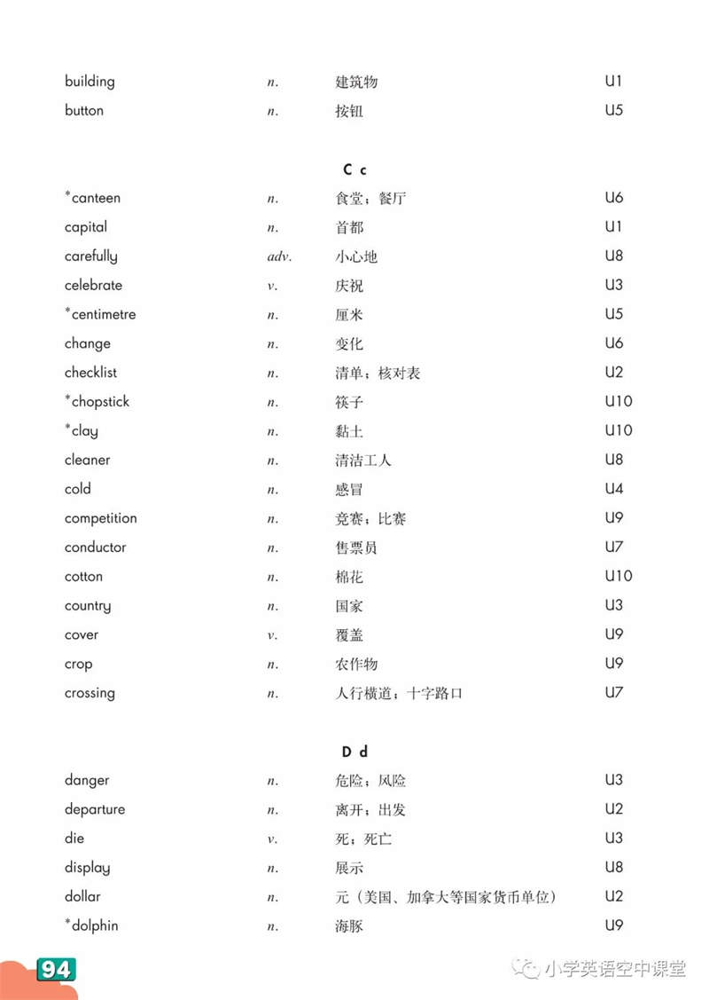
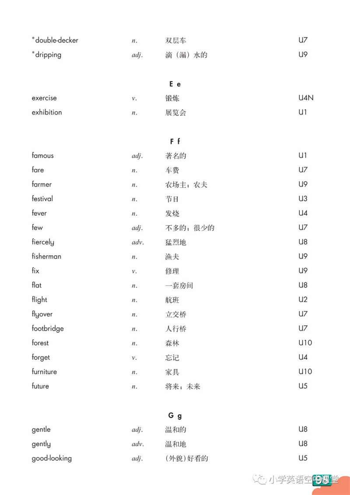
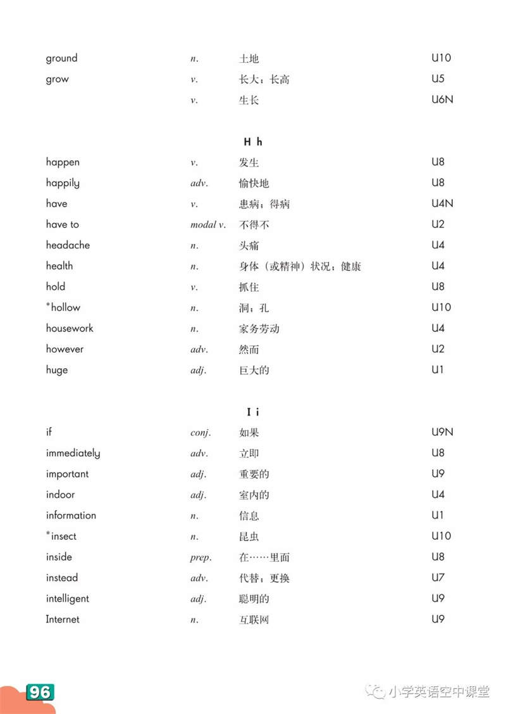
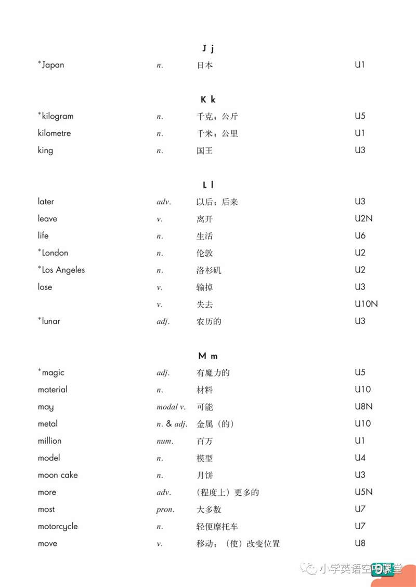
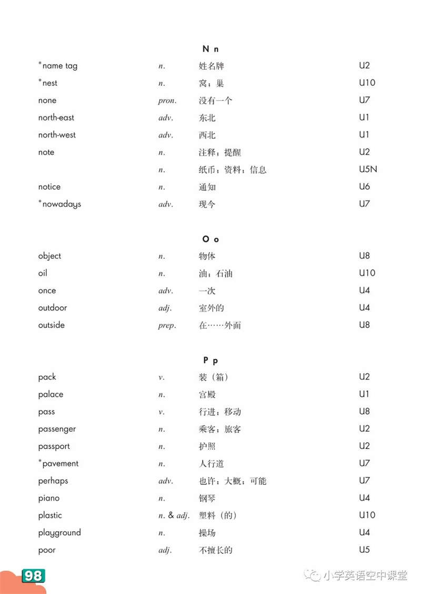
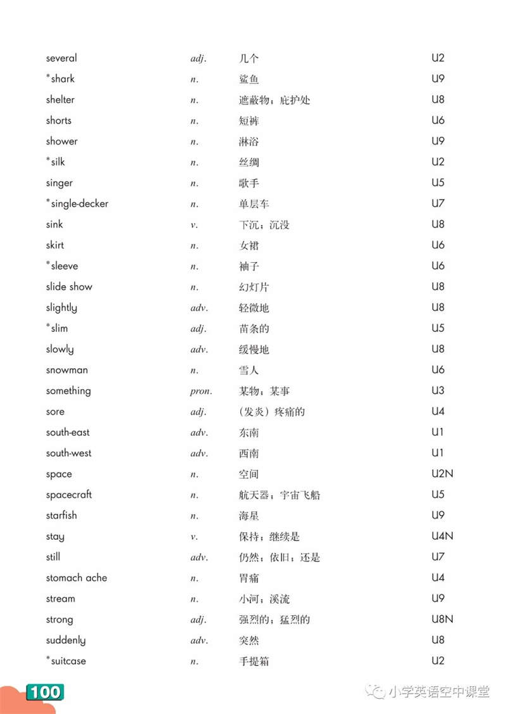
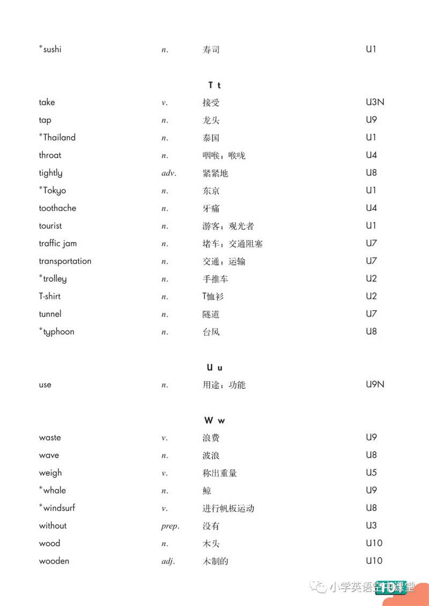
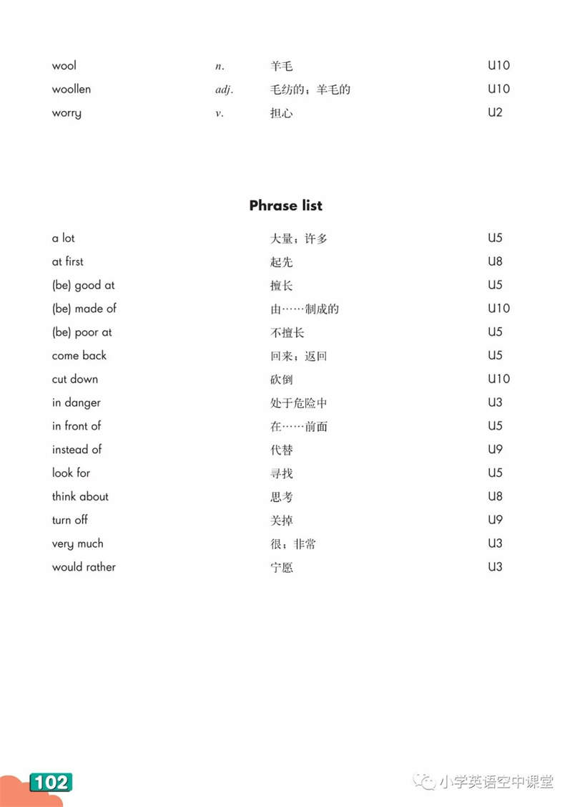

📚 沪教版六年级英语下册 单词表
| 单词 Word | 词性 | 音标 Phonetic | 单元 | 中文意思 Meaning |
|---|---|---|---|---|
| A | ||||
| Asia | n. | /ˈeɪʒə/ | M1U1 | 亚洲 |
| B | ||||
| Bangkok | n. | /ˈbæŋkɒk/ | M1U1 | 曼谷 |
| bell | n. | /bel/ | M2U7 | 钟，铃 |
| better and better | - | /ˈbetə ənd ˈbetə/ | M1U3 | 越来越好 |
| broom | n. | /bruːm/ | M1U2 | 扫帚 |
| brush | n. | /brʌʃ/ | M1U4 | 刷，刷子 |
| building | n. | /ˈbɪldɪŋ/ | M1U1 | 建筑物 |
| by hand | - | /baɪ hænd/ | M1U2 | 用手 |
| C | ||||
| capital | n. | /ˈkæpɪtl/ | M1U1 | 首都 |
| carefully | adv. | /ˈkeəfəli/ | M1U4 | 细致地，小心地 |
| carry | v. | /ˈkæri/ | M1U3 | 拿，提，扛 |
| centimetre | n. | /ˈsentɪmiːtə(r)/ | M1U1 | 厘米 |
| Chinese ink painting | - | /tʃaɪˈniːz ɪŋk ˈpeɪntɪŋ/ | M2U7 | 中国水墨画 |
| D | ||||
| danger | n. | /ˈdeɪndʒə(r)/ | M1U3 | 危险 |
| digital | adj. | /ˈdɪdʒɪtl/ | M1U2 | 数码的 |
| dinosaur | n. | /ˈdaɪnəsɔː(r)/ | M1U3 | 恐龙 |
| drive | v. | /draɪv/ | M1U2 | 驾驶 |
| E | ||||
| enjoy oneself | - | /ɪnˈdʒɔɪ wʌnˈself/ | M1U1 | 过得快活，得到乐趣 |
| even | adv. | /ˈiːvn/ | M1U3 | 甚至，连，愈加 |
| exhibition | n. | /ˌeksɪˈbɪʃn/ | M1U1 | 展览 |
| F | ||||
| fairy | n. | /ˈfeəri/ | M1U2 | 仙子，小精灵 |
| famous | adj. | /ˈfeɪməs/ | M1U1 | 著名的 |
| fan | n. | /fæn/ | M1U1 | 迷，狂热爱好者 |
| fantastic | adj. | /fænˈtæstɪk/ | M1U1 | 极好的 |
| film | n. | /fɪlm/ | M1U2 | 电影 |
| follow | v. | /ˈfɒləʊ/ | M1U4 | 跟随 |
| G | ||||
| get ... in | - | /get ... ɪn/ | M1U1 | 收进... |
| get lost | - | /get lɒst/ | M1U4 | 迷路 |
| glue | n. | /ɡluː/ | M2U5 | 胶水 |
| go fishing | - | /ɡəʊ ˈfɪʃɪŋ/ | M1U1 | 去钓鱼 |
| H | ||||
| have a picnic | - | /hæv ə ˈpɪknɪk/ | M1U3 | 野餐 |
| headteacher | n. | /ˌhedˈtiːtʃə(r)/ | M1U3 | 校长 |
| huge | adj. | /hjuːdʒ/ | M1U1 | 巨大的 |
| I | ||||
| in a short time | - | /ɪn ə ʃɔːt taɪm/ | M1U2 | 很快 |
| in danger | - | /ɪn ˈdeɪndʒə(r)/ | M1U3 | 处于危险中 |
| information | n. | /ˌɪnfəˈmeɪʃn/ | M1U1 | 信息 |
| ink | n. | /ɪŋk/ | M2U7 | 墨水，墨汁 |
| J | ||||
| Japan | n. | /dʒəˈpæn/ | M1U1 | 日本 |
| K | ||||
| kilogram | n. | /ˈkɪləɡræm/ | M1U1 | 千克，公斤 |
| kilometre | n. | /kɪˈlɒmɪtə(r)/ | M1U1 | 千米，公里 |
| L | ||||
| life | n. | /laɪf/ | M1U2 | 生活，生命 |
| long race | - | /lɒŋ reɪs/ | M1U4 | 长跑 |
| look out | - | /lʊk aʊt/ | M1U4 | 小心，当心 |
| M | ||||
| middle | adj. | /ˈmɪdl/ | M1U4 | 中间的 |
| million | num. | /ˈmɪljən/ | M1U1 | 百万 |
| moon cake | n. | /muːn keɪk/ | M1U3 | 月饼 |
| mountain | n. | /ˈmaʊntən/ | M1U3 | 高山，山岳 |
| N | ||||
| neck | n. | /nek/ | M2U7 | 脖子 |
| no smoking | - | /nəʊ ˈsməʊkɪŋ/ | M1U4 | 禁止吸烟 |
| no swimming | - | /nəʊ ˈswɪmɪŋ/ | M1U4 | 禁止游泳 |
| north-east | n. | /ˌnɔːθ ˈiːst/ | M1U1 | 东北 |
| north-west | n. | /ˌnɔːθ ˈwest/ | M1U1 | 西北 |
| O | ||||
| oil | n. | /ɔɪl/ | M1U4 | 油，食用油，石油 |
| oil painting | - | /ɔɪl ˈpeɪntɪŋ/ | M2U7 | 油画 |
| on the left | - | /ɒn ðə left/ | M1U4 | 在左边 |
| on the right | - | /ɒn ðə raɪt/ | M1U4 | 在右边 |
| on the way | - | /ɒn ðə weɪ/ | M1U4 | 在路上 |
| online | adj. | /ˌɒnˈlaɪn/ | M1U3 | 在线的，联网的 |
| P | ||||
| pain | n. | /peɪn/ | M1U4 | 痛苦，疼痛 |
| paints | n. | /peɪnts/ | M2U7 | 绘画颜料 |
| palace | n. | /ˈpæləs/ | M1U1 | 宫殿 |
| path | n. | /pɑːθ/ | M1U4 | 小径 |
| photographer | n. | /fəˈtɒɡrəfə(r)/ | M1U2 | 摄影师 |
| piece | n. | /piːs/ | M1U3 | 张，片 |
| poor | adj. | /pɔː(r)/ | M1U2 | 可怜的，贫穷的 |
| powerful | adj. | /ˈpaʊəfl/ | M1U4 | 强有力的 |
| praise | v. | /preɪz/ | M2U7 | 赞扬 |
| PS | - | /ˌpiː ˈes/ | M1U3 | 附言（信末） |
| pudding | n. | /ˈpʊdɪŋ/ | M1U3 | 布丁 |
| R | ||||
| race | n. | /reɪs/ | M1U1 | 比赛 |
| right away | - | /raɪt əˈweɪ/ | M1U2 | 立即，马上 |
| S | ||||
| scissors | n. | /ˈsɪzəz/ | M2U5 | 剪刀 |
| short race | - | /ʃɔːt reɪs/ | M1U4 | 短跑 |
| sign | n. | /saɪn/ | M1U4 | 标志，信号 |
| something | pron. | /ˈsʌmθɪŋ/ | M1U1 | 某事，某物 |
| south-east | n. | /ˌsaʊθ ˈiːst/ | M1U1 | 东南 |
| south-west | n. | /ˌsaʊθ ˈwest/ | M1U1 | 西南 |
| space | n. | /speɪs/ | M1U3 | 太空 |
| still | adv. | /stɪl/ | M2U5 | 仍然 |
| street cleaner | n. | /striːt ˈkliːnə(r)/ | M1U2 | 环卫工人 |
| sushi | n. | /ˈsuːʃi/ | M1U1 | 寿司 |
| sweep | v. | /swiːp/ | M1U2 | 扫，打扫 |
| swimming cap | - | /ˈswɪmɪŋ kæp/ | M1U4 | 游泳帽 |
| swimming goggles | - | /ˈswɪmɪŋ ˈɡɒɡlz/ | M1U4 | 泳镜 |
| T | ||||
| taller | adj. | /ˈtɔːlə(r)/ | M1U1 | 更高的 |
| Thailand | n. | /ˈtaɪlænd/ | M1U1 | 泰国 |
| theatre | n. | /ˈθɪətə(r)/ | M1U1 | 剧场 |
| themselves | pron. | /ðəmˈselvz/ | M1U1 | 他/她/它们自己 |
| Tokyo | n. | /ˈtəʊkjəʊ/ | M1U1 | 东京 |
| tourist | n. | /ˈtʊərɪst/ | M1U1 | 游客 |
| U | ||||
| unhappy | adj. | /ʌnˈhæpi/ | M1U4 | 不高兴的 |
| W | ||||
| warm-up | n. | /ˈwɔːm ʌp/ | M1U4 | 准备活动 |
| weigh | v. | /weɪ/ | M1U1 | 重量是，称...的重量 |
| wife | n. | /waɪf/ | M1U2 | 妻子，太太 |
| wish | v. | /wɪʃ/ | M1U2 | 希望 |
| without | prep. | /wɪˈðaʊt/ | M1U3 | 没有 |
| writer | n. | /ˈraɪtə(r)/ | M1U2 | 作家 |
📖 原始资料引用 (Source References)
以下图片为沪教版六年级英语下册（牛津上海版）电子课本单词表原始截图，仅供学习参考使用。

第1页

第2页

第3页

第4页

第5页

第6页

第7页

第8页

第9页

第10页
📌 来源: xueba5.com - 沪教版六年级英语下册单词表
本页面仅供个人学习使用，版权归原作者所有。